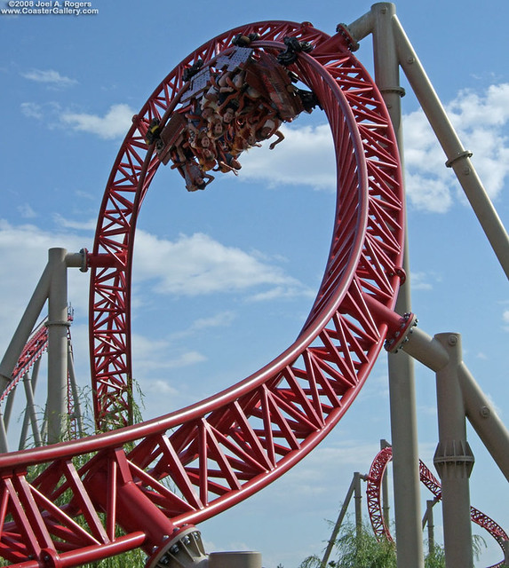

There are lots of parks, and chains of parks throughout the United States and the world. Each chain has their own characteristics that distinguish their parks from the others. They all value different aspects of their parks. Some value theming more than others, some want the tallest and fastest new rides, and some are somewhere in between. Some parks are also owned independently. This means that They are not owned by any major company.
Six Flags

Six Flags is a very large amusement park chain that has various locations in the United States, Canada, and Mexico. They are known for making large parks with lots of high trill atractions. However they are also known for their lack of theming on their rides, and their parks not looking as good as some others. They tend to not have very many trees or plants, so their parks are mostly just concrete, and don't have too much charm to them. They are also known for being cheap on their investments. They tend to take the cheaper route when getting new rides and attractions, and they don't like to spend large amounts of money. However overall they are still good parks because of their great coaster collections, they are just lacking in some other areas. But if you are a coaster enthusiast, then the roller coasters are what you care about most anyways.
Universal

Universal is a large theme park chain that is known for their heavy focus on theming and park atmosphere. They have parks in Florida, California, Singapore, Japan, And China. They usually have lots of flat rides and dark rides, with a few roller coasters. They are not afraid to spend lots of money on large investments, in order to insure that Their rides are well themed, immersive, and fun. They don't have as many coaster's as some other chains. But they make up for that in other areas, and the coasters that they do have are incredible.
Seaworld

Seaworld is a mid-sized chain that has parks exclusively in the United States. Their parks usually have a good balance between coasters, theming, and atmosphere. They have some great coasters, and their parks also look good. Combining all these things together makes for a solid theme park chain. One negative about Seaworld though is the cruel treatment of their animals. While many other parks have animals, Seaworld's treatment of them has been particularly bad.
Cedar Fair
Cedar Fair is a very large amusement park chain that is known for their world class coaster collection. They have many locations all across the United States, and one in Canada. They mainly focus on their coaster lineups more than anything else. But they do have better theming and park atmosphere than Six Flags does, which is one of their top competitors. Just think of Cedar Fair as a more well rounded Six Flags. They are overall a great chain, and it's no wonder why they are consistently praised amongst coaster enthusiasts as one of the best.
Disney

Disney is a large chain that has parks across the United States, China, France, Japan, and Hong Kong. They are very well known across the world, and most people have heard of their parks. They are known for their large investments when it comes to immersive theming. Their parks usually have lots of well themed dark rides, and a few coasters. They don’t have the biggest coaster collection, but the ones that they do have tend to be very well made. Disney parks aren’t the favorite among coaster enthusiasts because of their small coaster lineups, but they certainly make up for this. They have many great qualities. They take you into immersive lands that make you feel like you are on another planet. Their attention to detail and charm to their parks makes them loved by many people across the world.
Independent Parks
The term independent parks refers to parks that are not owned by a chain, meaning that they are the only park in their company. Some of the best independent parks include Hersheypark, Knoebels, Indiana Beach, Holiday World, and many others. They typically have a fun and enjoyable atmosphere. Some have old classic rides, and Some also have new modern ones. Since it isn't a chain, the company doesn't have any other parks to focus on. This causes them to spend more attention to